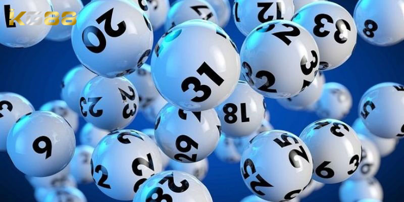

CASINO KG88
Hướng Dẫn Cách Chơi Roulette Hiệu Quả Cho Tân Thủ
POSTED ON THÁNG SÁU 7, 2024 BY ADMINKG88

Cách chơi Roulette với phương pháp hay được đánh giá là khá đơn giản, dễ dàng tham gia và tỷ lệ trả thưởng cực cao. Đây là một trong những game cá cược trực tuyến hot nhất nhì trên thị trường hiện nay. Nếu anh em đang tìm hiểu về tựa game này thì hãy theo dõi ngay bài viết dưới đây cùng nhà cái KG88 nhé.
Giới thiệu về game chơi roulette là gì?
Nhắc đến Roulette thì đây là một trò chơi du nhập về Việt Nam trong những năm gần đây. Đây là một trò chơi cực kỳ nổi tiếng ở những thập niên 90. Tuy chỉ mới du nhập vào thị trường Việt Nam chưa lâu nhưng đã nhận được sự quan tâm lớn từ phía người chơi.
Mọi người có thể hiểu cách chơi Roulette đơn giản là quay số gồm có những con số khác nhau. Người chơi sẽ chọn ra số mình thích và đặt cược vào chúng. Chỉ cần nhà cái quay trúng con số mà bạn đặt cược thì tất nhiên phần thưởng sẽ thuộc về bạn.
Hướng dẫn cách chơi Roulette cho tân binh mới
Sau khi đã tìm hiểu về định nghĩa của Roulette thì người chơi có thể hiểu đây là một dạng game bài cá cược vô cùng hấp dẫn. Cách chơi Roulette khá đơn giản và dễ hiểu. Để có thể tham gia thì người chơi cần phải tìm hiểu các bước chơi sau đây:
Luật chơi cơ bản của game bài Roulette
Trong Roulette, người chơi sẽ đặt cược vào số hoặc dãy số có màu sắc (đỏ hoặc đen), hoặc những số liệu là chẵn hoặc lẻ trước khi bánh xe được quay. Sẽ có một quả bóng nhỏ được quay ngược chiều của bánh xe và cuối cùng nó sẽ dừng lại ở một trong các ô số. Nếu như dự đoán của người chơi trùng khớp với kết quả mà bánh xe quay được thì người chơi sẽ giành chiến thắng tùy thuộc vào tỷ lệ thanh toán của các loại cực đã chọn.
Luật chơi cơ bản của game bài Roulette
Cách chơi roulette đặt cược bên trong
Các loại cược “bên trong” trên bàn Roulette cho phép người chơi đặt cược trực tiếp lên số hoặc dãy số gần nhau.
- Cược trực tiếp : Đặt phỉnh cược lên một con số cụ thể.
- Cược Tách : Đặt cược ở giữa 2 con số và chấp nhận cả 2 số.
- Cược Dãy: Đặt cược vào cuối hoặc hành số bao gồm 3 số.
- Cược Hàng: Đặt cược ở cuối 2 hàng bao gồm 6 số.
Cách chơi roulette đặt cược bên ngoài
Cách chơi roulette cược bên ngoài sẽ bao gồm các loại cược với tỷ lệ cao hơn nhưng tỷ lệ thanh toán sẽ thấp hơn:
- Cược Cột: Đặt cược ở một trong 3 cột và mỗi cột bao gồm 12 số.
- Cược Đỏ/Đen: Chọn ra màu của con số chiến thắng
- Chẵn/Lẻ: Đặt cược dựa vào dự đoán viên bi sẽ dừng ở ô số chẵn hay lẻ.
- Cược Nửa Bàn: Đặt cược vào 18 số đầu tiên hoặc 18 số cuối cùng.
Dealer tiến hành quay vòng
Sau khi đã tiến hành đặt cược xong, phía Dealer hay được hiểu nôm na là nhà cái sẽ tiến hành quay vòng. Đồng thời sẽ thả ra một trái bóng vào vòng quay may rủi này. Lúc này, người chơi chỉ việc theo dõi xem quả bóng sẽ rơi trúng số nào và chờ đợi xem mình có phải là người may mắn giành được chiến thắng hay không.
 Dealer tiến hành quay vòng tròn roulette may mắn
Dealer tiến hành quay vòng tròn roulette may mắn
Công bố kết quả và thanh toán
Sau khi vòng quay dừng lại thì lúc này quả bóng sẽ dừng tại một ô trên vòng quay. Sau khi có kết quả, phía Dealer của casino KG88 sẽ thông báo đến người chơi, nếu như quả bóng dừng ở 11 Red thì có nghĩa là trái bóng đá rơi trúng số 11 màu đỏ. Đồng thời, những ký hiệu được thể hiện ở trên bàn xung quanh con số này cũng sẽ chiến thắng nếu như người chơi tham gia đặt cược.
Những mẹo chơi Roulette hiệu quả hốt bạc
Có thể thấy rằng cách chơi roulette rất đơn giản. Tuy nhiên để có thể kiếm được thu nhập từ trò chơi này thì việc tìm hiểu được cách chơi thôi là chưa đủ. Thay vào đó, người chơi cần phải có cho mình những chiến thuật đặc biệt. Sau đây sẽ là một vài những kiến thức cá cược giúp cho người chơi có thể chơi Roulette một cách hiệu quả.
Mẹo chơi đánh số quay vòng
Trên các bàn cá cược của Roulette, anh em sẽ phải đặt cược theo một quy trình xác định tại khu vực có 2 khu số riêng. Điều này có nghĩa là anh em sẽ phải chia bàn cược thành nhiều khu vực khác nhau sau đó mới tiến hành đặt cược theo từng khu riêng biệt.
Phương pháp đặt theo mã cược hay cược theo song sinh
Đối với những anh em đã tham gia chơi lâu năm, họ thường sẽ áp dụng chiến thuật này. Cụ thể ở mỗi lần cược, nếu như người chơi thắng thì ở ván cược sau hãy đặt cược số song sinh hoặc đặt sang 3 cửa. Qua 3 cửa thì người chơi sẽ có cơ hội thắng 2.375% và dành được số tiền thưởng.

Cách chơi Roulette với phương pháp hay
Mẹo chơi theo sóng thủy triều
Đối với cách chơi Roulette này, người chơi sẽ phải tập trung theo dõi các ván cược để tự tìm ra quy luật. trong suốt quá trình chơi người chơi hãy dành thời gian để quan sát khoảng 30 ván Roulette cùng với 30 con số đã giành chiến thắng liên tiếp. Nếu như phát hiện trong ván chơi có tới 5 con số liên tiếp xuất hiện thì nên đặt cược theo con số đó ở ván tiếp theo.
Bài viết trên KG88 đã tổng hợp toàn bộ những thông tin chi tiết về cách chơi Roulette cũng như những mẹo cá cược hay cho anh em tham khảo. Chúc anh em sẽ có được những giây phút trải nghiệm game vui vẻ tại Roulette nhé.
BÀI VIẾT MỚI